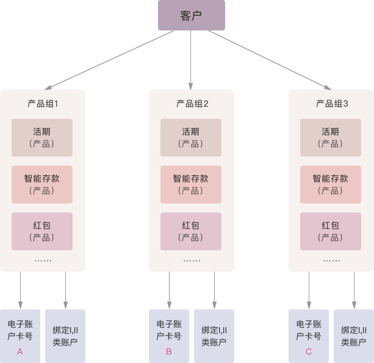
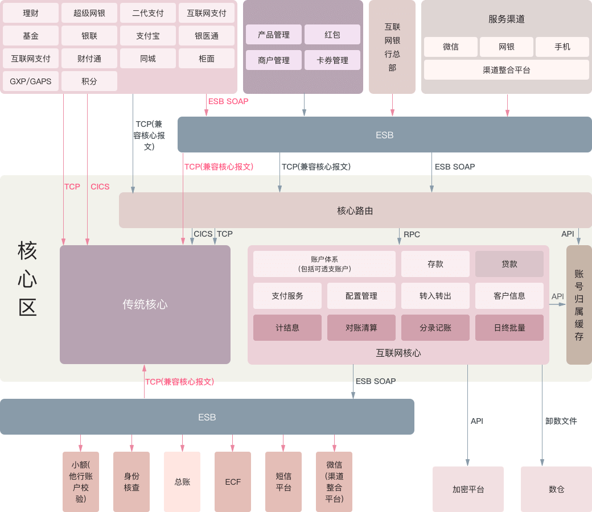

in 金融业务产品
作为传统互联网的延伸和演进，移动互联网在近两年得到了迅猛的发展，如今，越来越多的用户通过高速移动网络和强大智能终端接入互联网，享受丰富的互联网业务和服务。
银行在享受移动互联网新一轮发展机遇的同时，其互联网下大量小金额账户，大量他行用户，大量小额、高频交易，更高的7x24不间断运行要求，更高的产品持续创新要求等对传统核心系统构成了极大挑战。云核网络通过对传统场景与互联网场景的分析，从客户群体差异、服务渠道差异、风控方式差异、快速响应差异、创新发展差异等方面入手，由具有超过20年核心系统经验的团队，采用分布式微服务架构从零开始重新设计，为银行业全新打造互联网核心业务系统。
开放的产品架构
支持产品类型、产品子类、产品的开放架构，灵活产品配置工厂，可扩展的产品、账户体系，以满足产品变更、产品创新的未来发展。支持组合产品、活期产品、定期产品、内部账产品等多种类型。组合产品类型包括：二、三类电子账户子类，一类电子账户，集团账户，账户组。活期产品类型包括：活期子类（普通活期子类）等。定期产品类型包括：定期子类（整整子类、零整子类、整零子类）等。内部账产品类型包括：内部账子类、准实时内部账子类（借方余额内部账、贷方余额内部账、双向余额内部账）等。
图表1 产品与账户

支持二、三类账户
满足二、三类户的监管要求，提供开户、结息、销户、充值、提现、消费、购买产品、账户限额、绑定账户、解绑等功能。
以客户为中心
实现可扩展的客户信息结构，以满足客户信息管理、互联网营销及互联网风控等要求。
强大交易处理
支持正常交易、动账通知；支持自动交易撤销（抹账、红字冲正）；支持挂账处理；支持双核心特殊处理；支持与其他系统对账（大、小额，超级网银，银联，贷款系统，传统核心）。
丰富账户管理
支持冻结、解冻、圈存、解圈、止付、解付、6个月无交易账户、转不动户等账户管理。
灵活的计结息
采用余额历史表、利率历史表等，支持灵活的计息、计提、补提、结息、销户结息。
灵活的费用模型
采用余额历史表、利率历史表（费率）等，提供灵活的费用模型。
利率市场化
支持综合定价与标准定价，支持多维度定价（产品、地区、客户级别、平均余额、当前余额、期限、优惠计划），支持周期利率重定价。
完全满足监管要求
满足《银发〔2016〕302号 中国人民银行关于落实个人银行账户分类管理制度的通知》、《银发〔2018〕16号 中国人民银行关于改进个人银行账户分类管理有关事项的通知》等监管要求。
分布式微服务架构
可扩展的分布服务架构，以满足互联网服务对低延迟、高并发的要求。
实时与准实时内部账更新
支持实时与准实时内部账更新，提供消息队列、异步处理等准实时机制。
账户级日切
提供账户级日切，支持并行跑批、并行账户交易。
实时规则变更
支持系统规则、产品规则、账户规则的实时规则变更。
总账对接支持准实时、异步、支持断点续传
分布式批量架构
支持批量作业的断点续跑、并发调度。
案例名称
昆山农村商业银行互联网核心系统
案例特点
传统核心与互联网核心共存，通过引入核心路由层，大幅降低了周边系统的改造工作量。采用分布服务架构，以满足互联网服务对低延迟、高并发的要求，采用开放架构，支持第三方服务的整合，支持服务互联网输出。
图表2 昆山农村商业银行互联网核心系统示意图
